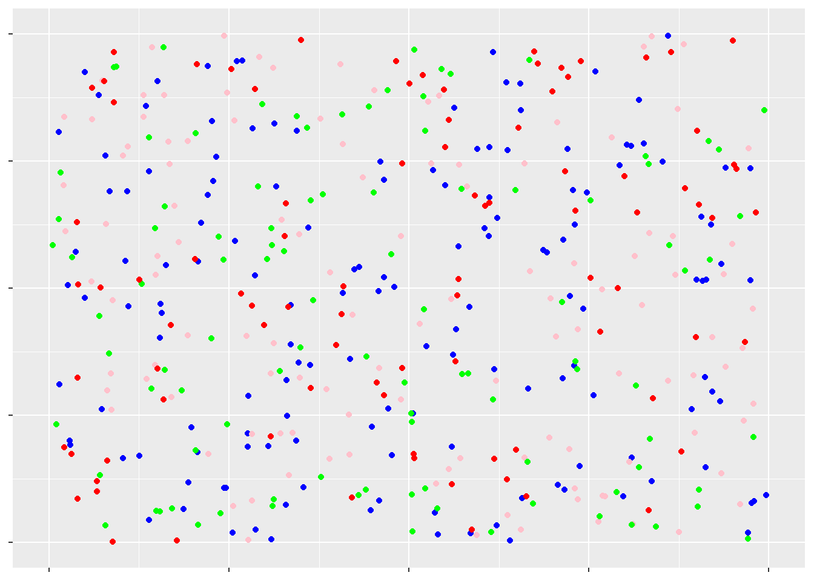
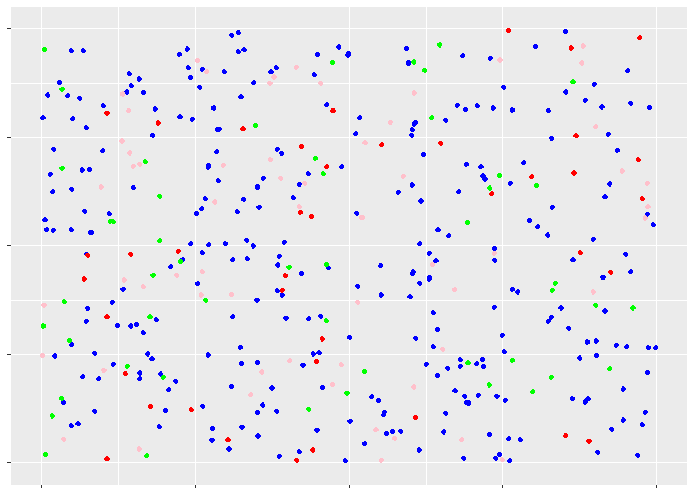

rm(list = ls())Μέτρηση ποικιλομορφίας
1 Ποικιλότητα Shannon
Στην παρούσα ενότητα θα προσπαθήσουμε να μετρήσουμε τον πλουραλισμό και την πολυφωνία σε μια ομάδα. Αρχικά, βέβαια, διαγράφουμε ό,τι έχουμε γράψει ως τώρα.
Ας υποθέσουμε ότι ένα σωματείο έχει συνέλευση, στην οποία παραβρίσκονται 150 άτομα που πρόσκεινται στη ΝΔ (μπλε), 120 άτομα που πρόσκεινται στον ΣΥΡΙΖΑ (ροζ), 100 άτομα στο ΠΑΣΟΚ (πράσινο) και 90 στο ΚΚΕ (κόκκινο). Αναπαριστούμε με την παρακάτω εικόνα την εν λόγω συνέλευση.

Το σωματείο φαίνεται να έχει όλη τη γκάμα των πολιτικών αποχρώσεων. Δεν μπορούμε να πούμε ότι κάποιο πολιτικό κόμμα έχει μόνο τυπική παρουσία στο σωματείο.
Αντίθετα, στο παρακάτω σωματείο φαίνεται να υπάρχει μικρότερη ποικιλία απόψεων. Σε αυτό παραβρίσκονται 290 άτομα που πρόσκεινται στη ΝΔ (μπλε), 60 άτομα που πρόσκεινται στον ΣΥΡΙΖΑ (ροζ), 50 άτομα στο ΠΑΣΟΚ (πράσινο) και 40 στο ΚΚΕ (κόκκινο).

Σε αυτό φαίνεται να έχει μονοκρατορία η ΝΔ. Η ποικιλία απόψεων είναι μόνο σε τυπικό επίπεδο, αφού η παρουσία των υπολοίπων είναι πρακτικά ασήμαντη.
Γενικότερα, όσο λιγότερα είδη φέρει ένας πληθυσμός, τόσο μικρότερη ποικιλότητα έχει. Κι όσο περισσότερο μονοπωλεί τον πληθυσμό ένα είδος, τόσο επίσης λιγότερη ποικιλότητα έχει. Πώς όμως μπορώ να μετρήσω αυτή την ποικιλότητα;
Ευτυχώς για μας, δεν χρειάζεται να βασιζόμαστε μόνο στη διαίσθησή μας. Υπάρχει τρόπος να ορίσουμε τόσο αυστηρά την ποικιλότητα, ώστε να μπορεί να προσδιοριστεί με έναν αριθμό. Όσο μεγαλύτερος είναι αυτός, τόσο μεγαλύτερη και η ποικιλότητα. Αυτός είναι η λεγόμενη ποικιλότητα Shannon.
Εδώ δεν θα ασχοληθούμε, φυσικά, με υποθετικά σωματεία. Θα εξετάσουμε την ποικιλότητα της ελληνικής εκλογικής σκηνής στις αναμετρήσεις του 1996 και του 2000. Προς τούτο αντλήσαμε στοιχεία από τη σελίδα του Υπουργείου Εσωτερικών και τ’ αποθηκεύσαμε σε ένα αρχείο ονόματι ekloges9600.xlsx ακολουθώντας τις οδηγίες από την ενότητα Εισαγωγή αρχείων από άλλα προγράμματα.
| komma | pososto | psifoi | edres | etos |
|---|---|---|---|---|
| pAsOK | 41.49 | 2813245 | 162 | 1996 |
| Nd | 38.12 | 2584765 | 108 | 1996 |
| KKE | 5.61 | 380167 | 11 | 1996 |
| sYN | 5.12 | 347051 | 10 | 1996 |
| dHKKI | 4.43 | 300671 | 9 | 1996 |
| anoixh | 2.94 | 199463 | 0 | 1996 |
| EnKent | 0.72 | 48677 | 0 | 1996 |
| enoikol | 0.29 | 19934 | 0 | 1996 |
| kunhcoί | 0.26 | 17419 | 0 | 1996 |
| epen | 0.24 | 16501 | 0 | 1996 |
| komell | 0.18 | 12255 | 0 | 1996 |
| mahar | 0.15 | 10443 | 0 | 1996 |
| oikenal | 0.08 | 5715 | 0 | 1996 |
| hraucή | 0.07 | 4487 | 0 | 1996 |
| Oikell | 0.06 | 4113 | 0 | 1996 |
| M-lKKE | 0.06 | 4016 | 0 | 1996 |
| oakke | 0.05 | 3485 | 0 | 1996 |
| sean | 0.04 | 2470 | 0 | 1996 |
| AsKE | 0.03 | 2108 | 0 | 1996 |
| olump | 0.02 | 1619 | 0 | 1996 |
| loipa | 0.02 | 1123 | 0 | 1996 |
| keell | 0.00 | 247 | 0 | 1996 |
| eldhm | 0.00 | 65 | 0 | 1996 |
| elek | 0.00 | 8 | 0 | 1996 |
| kadik | 0.00 | 2 | 0 | 1996 |
| pAsOK | 43.79 | 3007596 | 158 | 2000 |
| Nd | 42.74 | 2935196 | 125 | 2000 |
| KKE | 5.52 | 379454 | 11 | 2000 |
| sYN | 3.20 | 219880 | 6 | 2000 |
| dHKKI | 2.69 | 184598 | 0 | 2000 |
| dpe | 0.47 | 32068 | 0 | 2000 |
| enkentr | 0.34 | 23228 | 0 | 2000 |
| elloik | 0.30 | 20446 | 0 | 2000 |
| ethnsum | 0.21 | 14703 | 0 | 2000 |
| prcram | 0.18 | 12125 | 0 | 2000 |
| mera | 0.12 | 8132 | 0 | 2000 |
| kke(m-l) | 0.11 | 7301 | 0 | 2000 |
| komell | 0.09 | 6272 | 0 | 2000 |
| m-lkkear | 0.09 | 5866 | 0 | 2000 |
| oikenal | 0.05 | 3321 | 0 | 2000 |
| komfil | 0.03 | 2091 | 0 | 2000 |
| aske | 0.03 | 2026 | 0 | 2000 |
| akep | 0.02 | 1145 | 0 | 2000 |
| oakke | 0.02 | 1126 | 0 | 2000 |
| loipa | 0.01 | 923 | 0 | 2000 |
| hrist | 0.00 | 305 | 0 | 2000 |
| koeel | 0.00 | 169 | 0 | 2000 |
| epak | 0.00 | 22 | 0 | 2000 |
| olumpismόs | 0.00 | 14 | 0 | 2000 |
| padhke | 0.00 | 4 | 0 | 2000 |
Για να βρούμε την ποικιλότητα του κάθε εκλογικού τοπίου χρειαζόμαστε τις συχνότητες των κομμάτων που το αποτελούν. Αυτές θα επεξεργαστεί η R για να βρει την ποικιλότητα Shannon. Δυστυχώς, η R δεν έχει έτοιμη συνάρτηση που να υπολογίζει την εν λόγω ποσότητα. Εν πάση περιπτώσει, ο γράφων δεν έχει υπ’ όψιν κάτι τέτοιο. Αισίως, όμως, υπάρχει η δυνατότητα να κατασκευάσουμε τα δικά μας εργαλεία στην R.
Παρακάτω ακολουθεί η συνάρτηση που υπολογίζει την ποικιλότητα Shannon από μια λίστα με συχνότητες (απόλυτες ή σχετικές). Οποτεδήποτε την χρειαστούμε επικολλούμε τις γραμμές αυτές ακριβώς ως έχουν πριν από το σημείο που θα την χρησιμοποιήσουμε. Ακολούθως γράφουμε shannon_diversity(♔), όπου ♔ το όνομα της λίστας με τις συχνότητες.
shannon_diversity <- function(my_freq) {
s <- sum(my_freq)
temp <- my_freq/s
sh <- -sum(temp*log2(temp))
sh
}Ακολούθως αποσπούμε τα κομμάτια της στήλης psifoi που μας απασχολούν. Θα φτιάξουμε μια λίστα με τις ψήφους του 1996 (psifoi1996) και μία με τις ψήφους του 2000 (psifoi1996). Ακολουθώντας τις οδηγίες της υποενότητας Νέος πίνακας έχουμε:
etos1996 <- ekloges9600$etos == 1996
psifoi1996 <- ekloges9600[etos1996,"psifoi"]
etos2000 <- ekloges9600$etos == 2000
psifoi2000 <- ekloges9600[etos2000,"psifoi"]Οι ποικιλότητες Shannon υπολογίζονται πλέον απλά γράφοντας:
shannon_diversity(psifoi1996)[1] 2.055986shannon_diversity(psifoi2000)[1] 1.759156οπότε βρίσκουμε για το 1996 ποικιλότητα 2.0559861 και για το 2000 ποικιλότητα 1.7591555. Επομένως τα αποτελέσματα του 1996 είχαν μεγαλύτερη ποικιλομορφία συγκριτικά με του 2000.
Ο αναγνώστης θα έχει τώρα την εύλογη απορία «Και πόσο μεγαλύτερη είναι η ποικιλότητα το 1996; Είναι οι 0,2968306 μονάδες διαφορά τόσο μεγάλη;». Θα χρησιμοποιήσουμε τον τροποποιημένο πίνακα από εδώ, για να δούμε πόσο μεγάλη είναι η κάθε ποικιλότητα:
| Τιμή ποικιλότητας | Αξιολόγηση ποικιλότητας |
|---|---|
| 5,049 και πάνω | Πολύ υψηλή |
| 4,328 με 5,048 | Υψηλή |
| 3,607 με 4,327 | Μέση |
| 2,885 με 3,606 | Χαμηλή |
| 2,884 και χαμηλότερα | Πολύ χαμηλή |
Βλέπουμε, λοιπόν, ότι και στις δύο εκλογικές αναμετρήσεις είχαμε πολύ χαμηλή ποικιλότητα. Η σύγκρισή τους όμως ακόμα δεν είναι εφικτή. Πρέπει να δουλέψουμε κι άλλο!
2 Ισομέρεια Shannon
Ένας τρόπος, λοιπόν, να απαντήσουμε αυτή την απορία είναι συγκρίνοντας τις εκάστοτε ποικιλότητες με τη μέγιστη δυνατή ανά περίπτωση.
Η μέγιστη δυνατή ποικιλότητα συμβαίνει όταν όλα τα είδη είναι ισόποσα στον πληθυσμό. Αυτή μπορεί να υπολογιστεί μέσω της συνάρτησης:
shannon_diversity_max <- function(my_freq) {
sh <- log2(length(my_freq))
sh
}Γράφοντας όμως:
shannon_diversity_max(psifoi1996)[1] 0shannon_diversity_max(psifoi2000)[1] 0προκύπτει ότι η μέγιστη ποικιλότητα είναι μηδέν, οπότε καταλαβαίνουμε ότι κάτι δεν πάει καλά με τον κώδικά μας. Αυτό το πρόβλημα προκύπτει επειδή τα psifoi1996 και psifoi2000 στην πραγματικότητα είναι πίνακες με μία στήλη κι όχι λίστες. Ναι, είναι διαφορετικό για την R, αλλά αυτόν της τον ψυχαναγκασμό μπορούμε να τον αντιμετωπίσουμε μέσω της σύνθεσης της συνάρτησης unlist:
psifoi1996L <- unlist(psifoi1996)
psifoi2000L <- unlist(psifoi2000)Έτσι, υπολογίζουμε την μέγιστη ποικιλότητα των λιστών psifoi1996L και psifoi1996L:
shannon_diversity_max(psifoi1996L)[1] 4.643856shannon_diversity_max(psifoi2000L)[1] 4.643856οπότε βρίσκουμε ότι η μέγιστη δυνατή ποικιλότητα το 1996 θα ήταν 4.6438562 και το 2000 θα ήταν επίσης 4.6438562.
Αυτό που βρήκαμε δεν είναι καθόλου παράξενο, αφού και στις δύο περιπτώσεις είχαμε 25 κόμματα, πράγμα που διαπιστώνουμε με τον παρακάτω κώδικα:
length(psifoi1996L)[1] 25length(psifoi2000L)[1] 25Η αρχική μας ιδέα ήταν να συγκριθεί η κάθε ποικιλότητα με την μέγιστη της άλλης. Αφού, όμως, οι μέγιστες ποικιλότητες είναι ίσες, δεν έχουμε παρά να δούμε τι ποσοστό της μέγιστης ποικιλότητας είναι η κάθε μία ξεχωριστά. Αυτό το ποσοστό είναι η ισομέρεια Shannon και υπολογίζεται από την συνάρτηση:
shannon_equitability <- function(my_freq) {
s <- sum(my_freq)
temp <- my_freq/s
shd <- -sum(temp*log2(temp))
shm <- log2(length(my_freq))
sh <- shd/shm
sh
}Κατά συνέπεια, γράφουμε:
shannon_equitability(psifoi1996L)[1] 0.4427325shannon_equitability(psifoi2000L)[1] 0.3788135και διαπιστώνουμε ότι ο δείκτης ισομέρειας το 1996 ήταν shannon_equitability(psifoi1996L) και το 2000 ήταν shannon_equitability(psifoi2000L). Απ’ ότι φαίνεται, τελικά, το 1996 υπήρχε εμφανώς μεγαλύτερη ποικιλομορφία στα εκλογικά αποτελέσματα, ενώ το 2000 υπήρξε έντονη συσπείρωση γύρω από τα μεγάλα κόμματα.
Συνολικά ο κώδικας αυτής της ανάρτησης έχει ως εξής:
rm(list = ls())
shannon_diversity <- function(my_freq) {
s <- sum(my_freq)
temp <- my_freq/s
sh <- -sum(temp*log2(temp))
sh
}
etos1996 <- ekloges9600$etos == 1996
psifoi1996 <- ekloges9600[etos1996,"psifoi"]
etos2000 <- ekloges9600$etos == 2000
psifoi2000 <- ekloges9600[etos2000,"psifoi"]
shannon_diversity(psifoi1996)
shannon_diversity(psifoi2000)
shannon_diversity_max <- function(my_freq) {
sh <- log2(length(my_freq))
sh
}
shannon_diversity_max(psifoi1996) # Τα psifoi1996 και psifoi2000 δεν είναι σε κατάλληλη μορφή
shannon_diversity_max(psifoi2000)
psifoi1996L <- unlist(psifoi1996)
psifoi2000L <- unlist(psifoi2000)
shannon_diversity_max(psifoi1996L) # Τα psifoi1996L και psifoi2000L είναι σε κατάλληλη μορφή
shannon_diversity_max(psifoi2000L)
length(psifoi1996L)
length(psifoi2000L)
shannon_equitability <- function(my_freq) {
s <- sum(my_freq)
temp <- my_freq/s
shd <- -sum(temp*log2(temp))
shm <- log2(length(my_freq))
sh <- shd/shm
sh
}
shannon_equitability(psifoi1996L)
shannon_equitability(psifoi2000L)